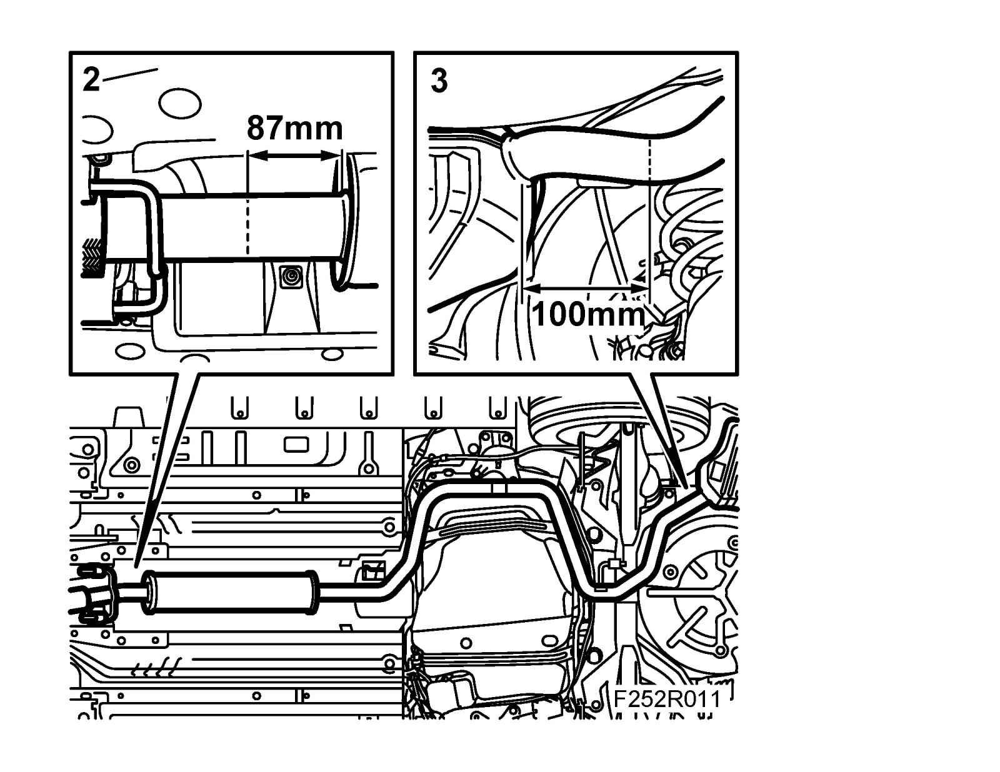
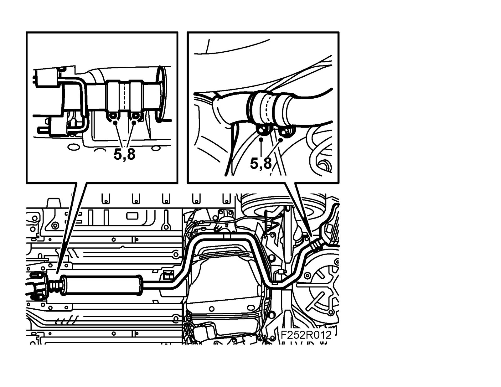

Silencer, Front, B207
Silencer, front, B207To remove
1. Raise the car.
2. Cut the front pipe between the flexible section and the silencer to the size given, 87 mm. Use 83 95 667 Pipe cutter exhaust system.

3. Cut the exhaust pipe at the rear silencer to the size given, 100 mm. Use 83 95 667 Pipe cutterhaust system.
4. Remove the front silencer.
To fit
1. Clean the joints and connecting pipe.
2. Fit the joint clamps.

3. Fit the front pipe with new rubber mountings.
4. If necessary also change the rubber mountings for the rear silencer.
5. Adjust the joint clamps so that the pipe ends are in the middle of the clamp.
6. Adjust the front and rear silencers so they hang evenly.
7. For cars with visible tailpipe, adjust this so that it hangs in the centre of the tailpipe cutout in the rear bumper.
8. Tighten the joint clamp nuts.
Tightening torque 40 Nm (30 lbf ft)
9. Lower the car
10. Connect an exhaust hose and start the engine. Check the exhaust system for leaks.